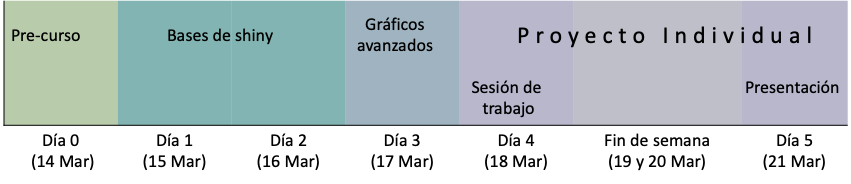

La visualización de datos forma parte escencial de la comunicación en la ciencia. Con los avances tecnológicos en la recolección y disponibilidad de la información, las bases de datos son cada vez más complejas en cuanto a su estructura. Las herramientas tradicionales de visualización de datos estática han sido efectivas para la comunicación de resultados en la ciencia, pero presentan algunas limitaciones al presentar análisis de bases de datos con estructuras jerárquicas espacio-temporales. Herramientas que permiten la interacción con el usuario son cada vez más comunes para ser usadas para la exploración y análisis de datos. El software estadístico R ha sido adoptado por analistas de datos e investigadores en diferentes áreas del conocimiento incluyendo, salud pública y epidemiología. En este curso se discutirán algunos conceptos en estrategias para el desarrollo de aplicaciones web que pueden ser usadas para explorar y presentar resultados con bases de datos complejas. Por medio de laboratorios prácticos, los instructores guían a los participantes para desarrollar sus propias aplicaciones y las puedan desplegar en servidores web con el objetivo de comunicar los resultados de análisis de la información.
Entender conceptos básicos de la organización de proyectos colaborativos con github y Rstudio Familiarizarse con el desarrollo de plataformas para visualización y análisis de datos interactivas.
Los participantes deberán tener un entendimiento básico de la sintaxis de R y estadística. Se ofrecerá material pre-curso y una sesión para aclarar dudas de instalación y del material pre-curso.
Hay 3 tutoriales que debes completar antes de empezar el curso, asegurate que tengas claro el contenido de los tutoriales para poder aprovechar mejor el tiempo durant el curso. Para cualquier duda en la instalacion del software, favor de contactar a los organizadores para poder ayudarte. Si tienes problemas para correr el codigo o preguntas sobre el material pre-curso, tendremos una sesion en el dia 0, la cual no es obligatoria, para aclarar dudas e ir sobre el material pre-curso. La idea de la sesion del dia 0 es que los participantes ya hayan leido previamente el material y solo aclarar dudas del material pre-curso. El material lo encontraras en el menu superior bajo la pestaña de Pre workshop o siguiendo los siguientes links:
- Requisitos
- Intro to R
- Intro to Spatial data
Algunas fuentes de datos para el proyecto
Todas las sesiones seran de 3 a 6 pm
Link del proyecto en Rstudio Cloud
Día 0 (14 de Marzo, 2022): Sesión de instalación de R studio, github y material pre-curso (opcional). Tiempo: 2 horas.
Dia 1 (15 de Marzo 2022): Como construir una Shiny app.
Dia 2 (16 de Marzo 2022): Configuración de tu entorno de desarrollo
Dia 3 (17 de Marzo 2022): Gráficos avanzados y publicación de shiny app
- Recapitulacion del dia anterior (LabIIb).
- Graficos avanzados con DT, plotly y visNetwork.
- Lab IIIa: Graficos avanzados.
- Publicando tu shinyapp.
- Introduccion al proyecto.
Dia 4 (18 de Marzo 2022): Sesión de trabajo para proyectos (opcional)
Dìa 5 (21 de Marzo 2022): Presentación de trabajos
